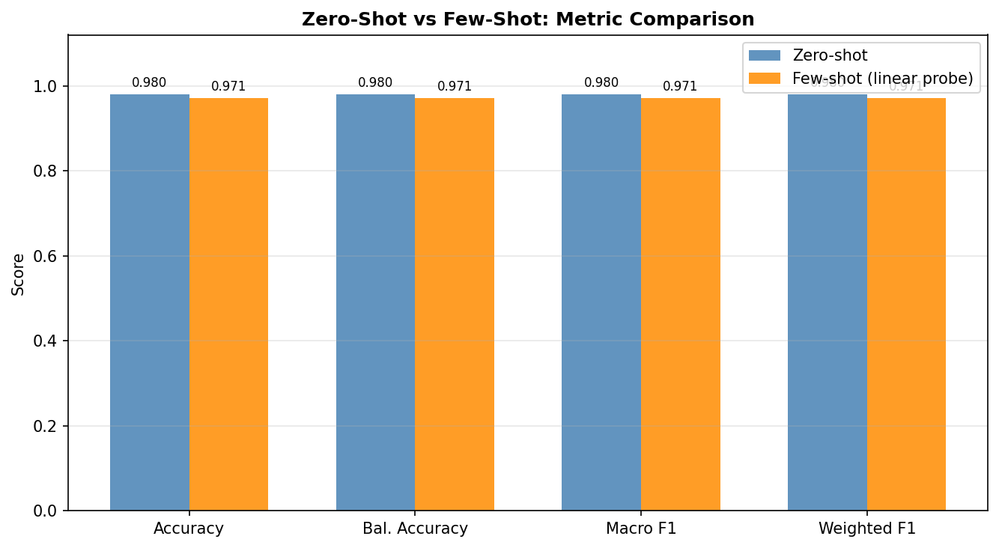
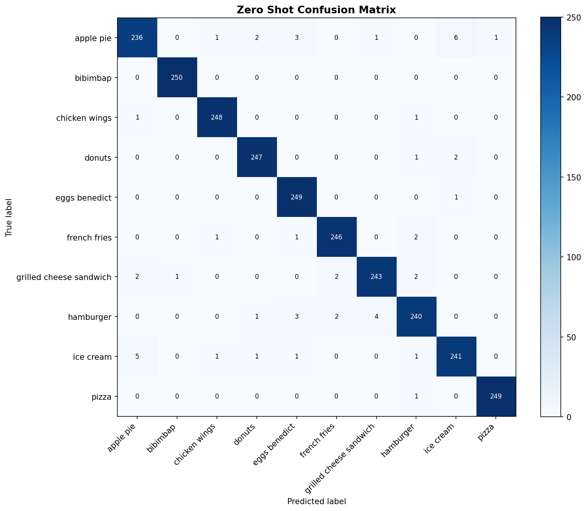

Accuracy
Assignment 1 / Multimodal / Evaluation Results
Results Console
Compare zero-shot and few-shot outcomes on the shared Food101 test split, inspect shot sensitivity, and review the confusion structures that explain where the classifier still fails.
Assignment 1 / Multimodal / Evaluation Results
Balanced Accuracy
Useful here because all 10 classes are balanced in the test split.
Macro F1
Interpretation
Aggregate comparison
Accuracy, precision, and F1 by method
The saved benchmark run shows zero-shot slightly ahead of the 128-shot linear probe on the shared test split.

Shot sensitivity
Few-shot scaling curve
Use the shot buttons to inspect how the linear probe improves as more labeled support examples become available.
| Method | Accuracy | Precision | Macro F1 | Balanced Acc. |
|---|
Confusion structure
Zero-shot confusion matrix
The confusion map highlights which visually similar food classes remain entangled after zero-shot prompting.

Decision
What the current results imply
Full benchmark table
Saved runs across shot budgets
| Shots / class | Method | Accuracy | Precision | Macro F1 | Balanced Acc. |
|---|